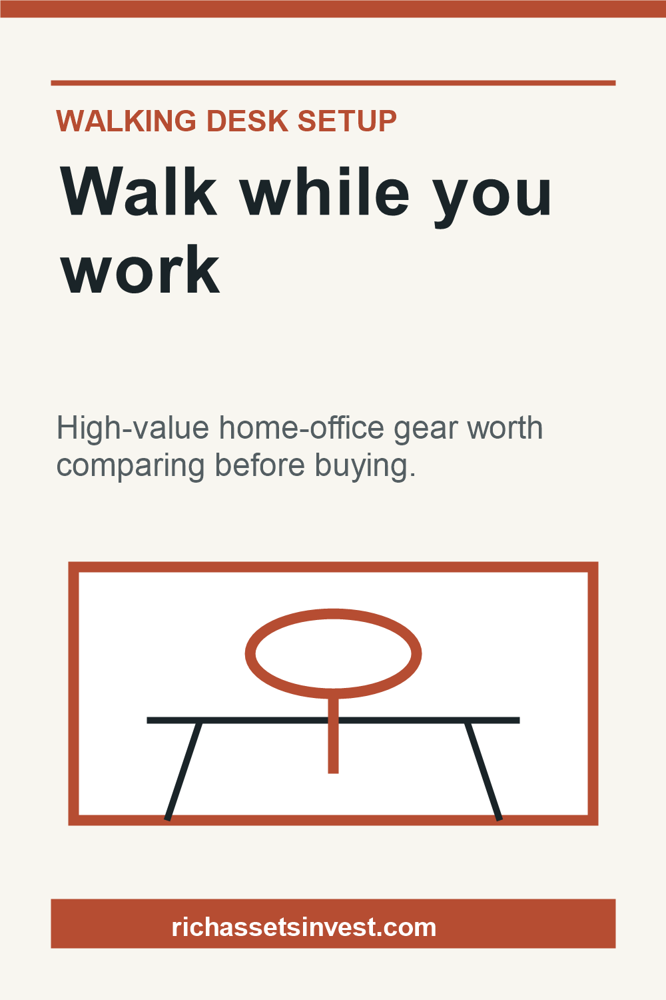

Quiet enough for calls
Look for buyer feedback around motor noise, belt noise, and whether people use it during video meetings.
Home Office Upgrade
Walking pads are a practical first upgrade for people who already work from home and want more movement without rebuilding the whole office.
As an Amazon Associate, RichAssets earns from qualifying purchases. This does not change the price you pay.

Buy Smarter
Most walking pads look similar at first glance. The useful differences are noise, storage, controls, speed range, and whether it fits under the desk you already use.
Look for buyer feedback around motor noise, belt noise, and whether people use it during video meetings.
Compact and foldable models suit small rooms better, especially if the desk area has to become normal living space again.
A remote, visible display, and simple speed controls matter more when the treadmill sits under a desk.
Fastest Starting Point
Use Amazon AU to compare current models, delivery options, specs, and buyer reviews in one place.
Narrow The Search
Best starting point when the home office is also a bedroom, spare room, or shared living area.
Useful if the treadmill needs to slide away after work or move between rooms.
Start here if noise is the main concern and the walking pad will be used during work hours.
Better for people starting from scratch who need both the treadmill and the height-adjustable desk.
Disclosure: As an Amazon Associate, RichAssets earns from qualifying purchases. RichAssets may also earn a commission from other affiliate links. This does not change the price you pay.